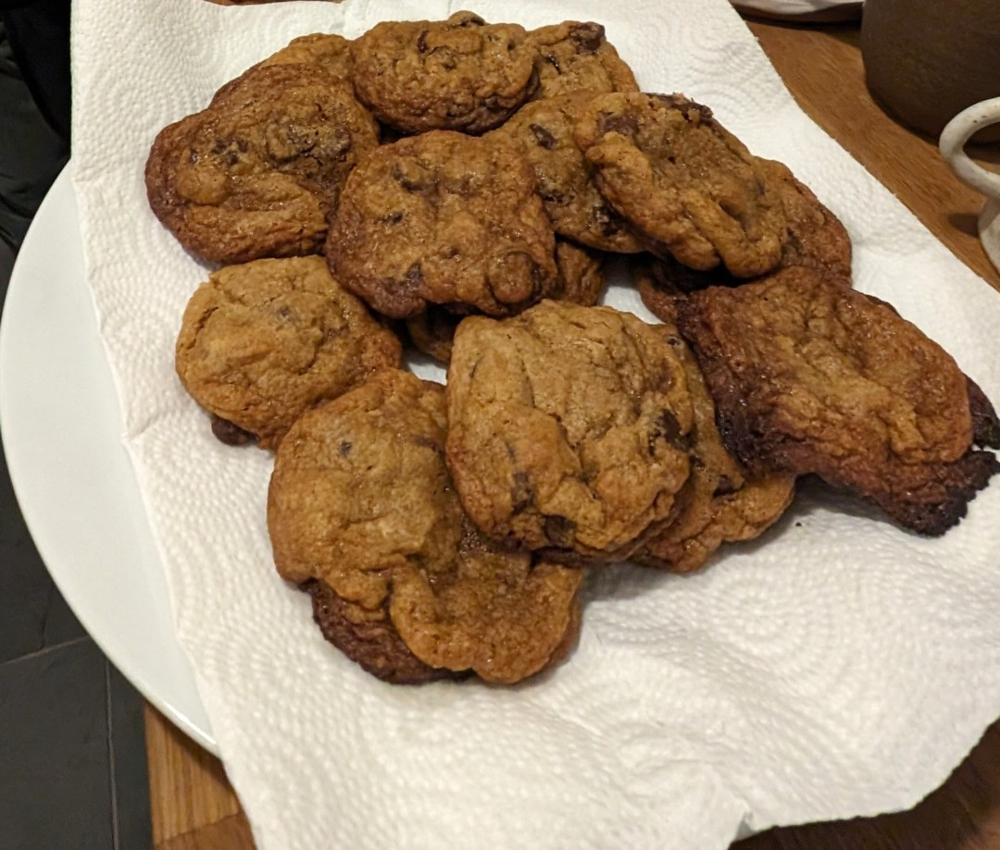
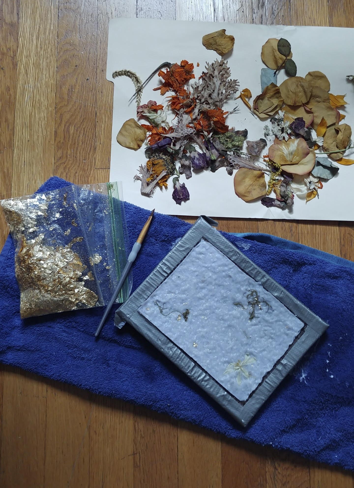

Welcome to my craft and making projects. For the last seven years I have worked in different mediums from paper making, baking, and collaging. I welcome you to peruse this site and consider your own creative endeavors. Have you longed to try something new, return to an old hobby or document your craft journey?
Click below on one of the images to check out a project!

